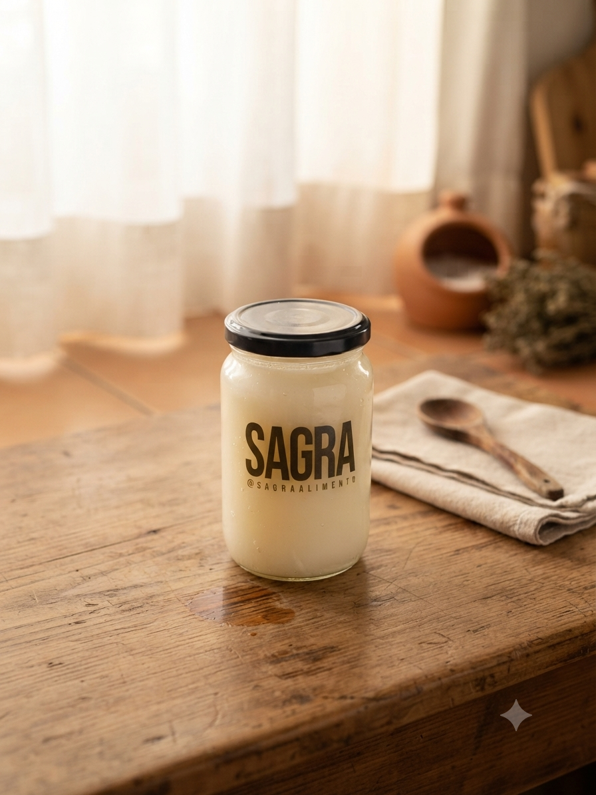
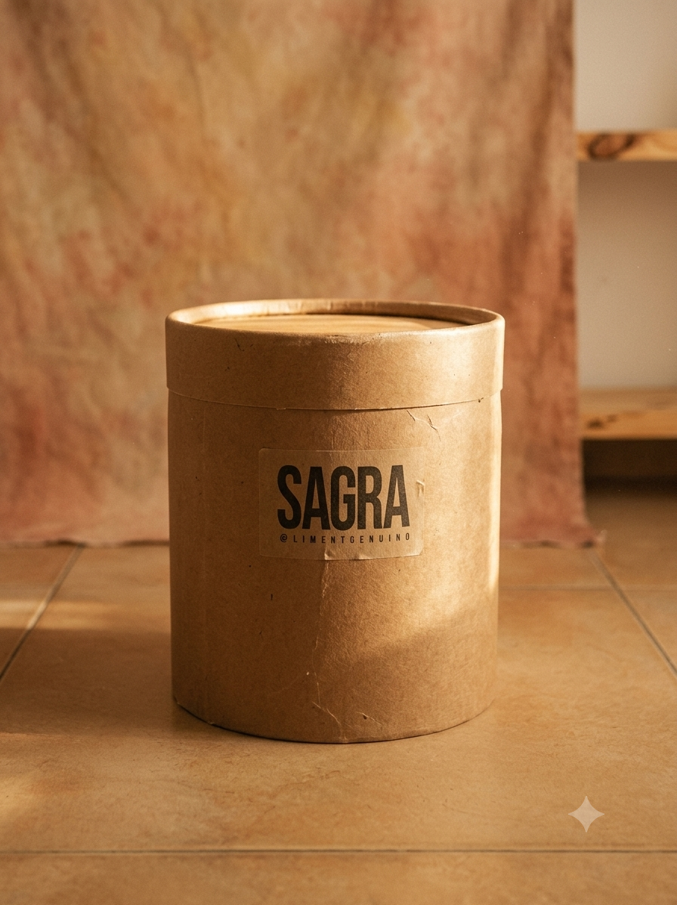
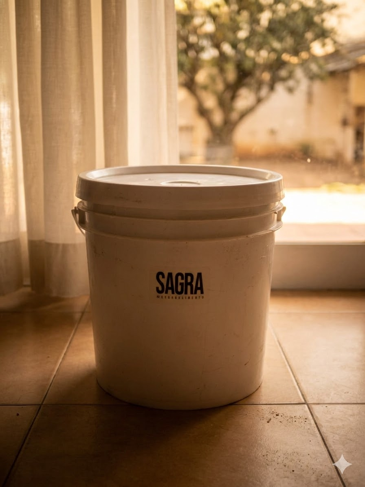

Frasco · 300 g
Formato práctico para hogares con consumo moderado.
- Sin conservantes BHT
- Grasa de pella refinada
- Proceso artesanal

Volver al alimento real.
Grasa de Pella Vacuna Fundida.
Formato práctico para hogares con consumo moderado.

Para consumo famiiliar, cocciones abundantes y fritura por inmersión.

Balde de 10 L para cocinas profesionales: panaderías, rotiserías, restaurantes.

La grasa animal fue pilar de la alimentación humana. Los intereses de la industria alimentaria generaron confusión y la demonizaron.
Hoy, SAGRA la devuelve a su lugar: un alimento noble, simple, verdadero.
Las materias grasas, son, por naturaleza, no perecederas.
En lugares secos y protegidos de la luz, SAGRA puede, en cualquiera de sus presentaciones, mantenerse en perfecto estado de conservación e inalterada por largos períodos, incluso siendo almacenada a temperatura ambiente.
Volver al alimento real.